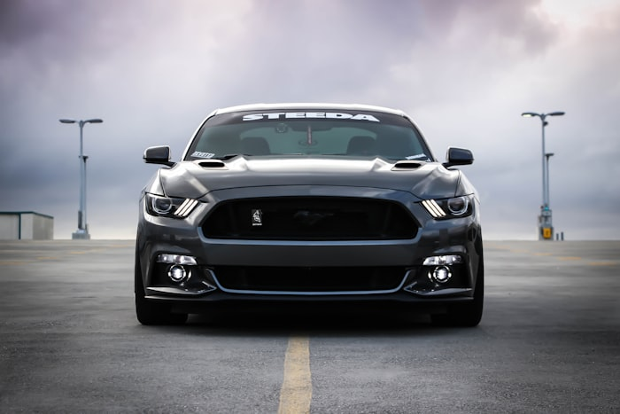
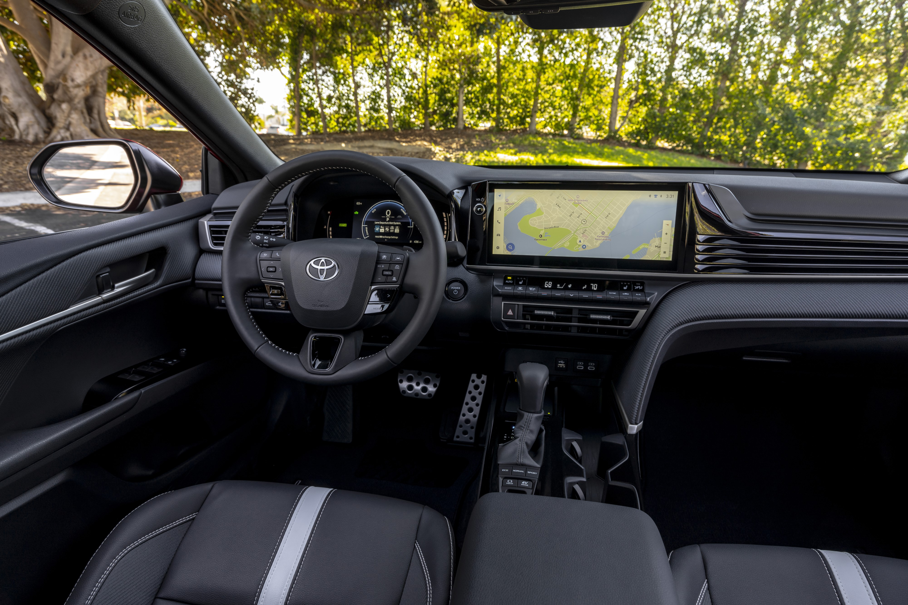

Media Gallery
2026 Camry – Front view with LED headlights

2026 Camry – Driving on the highway, showcasing handling and efficiency

2026 Camry – Interior with multimedia touchscreen
2026 Camry – Engine bay of the hybrid powertrain